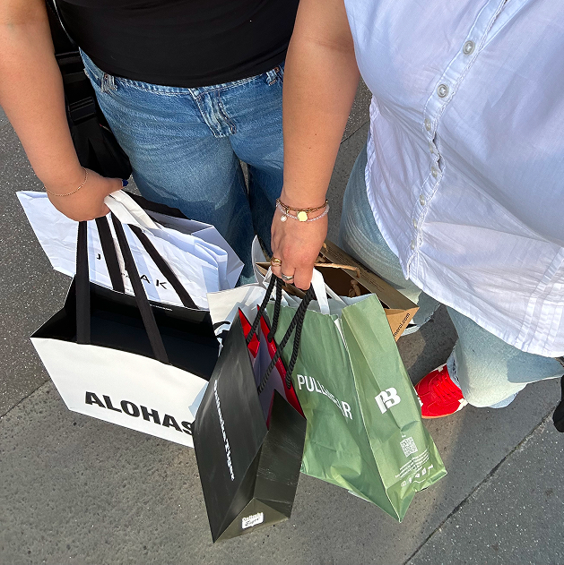
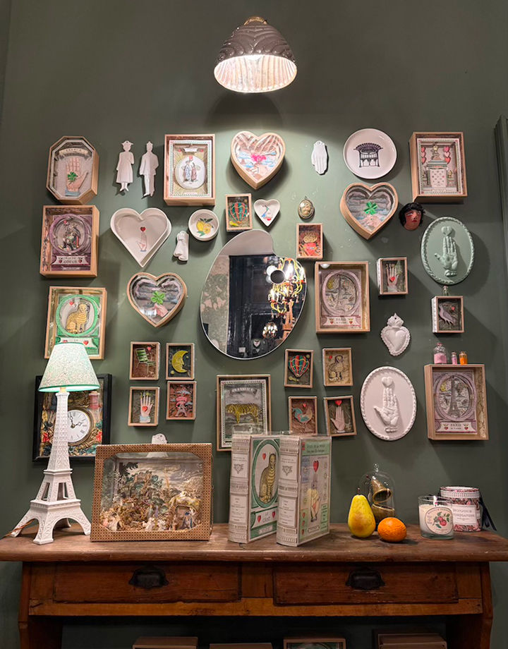
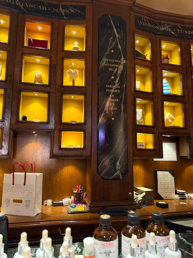
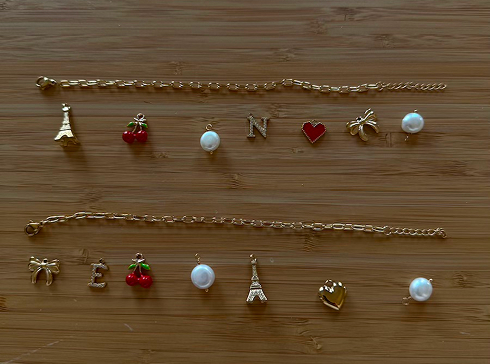

Open around 11am
Close around 7:30pm



If you’re looking for a 1€ Eiffel Tower keychain, Le Marais in the 4th Arrondissement is probably not the place to go. However, I had to include it as an honorable mention because it’s where I go when I want to find a souvenir that feels genuinely curated and high-end. This is the neighborhood for the friend who has everything or the family member who appreciates a designer aesthetic. Even if you’re on a strict budget, walking through the Marais is great for window shopping. Or even to splurge on souvenirs for yourself.
Staff friendliness: Different than the other areas. These are mostly high-end boutiques and concept stores, so the service is very professional. They definitely speak English, but the energy is more gallery than gift shop.
Store Variety: What I love about the store variety here is that you won't find the typical souvenirs here. Instead, the products sold are French candles from Cire Trudon, luxury tea from Mariage Frères, bracelet pieces from Perlerie 22 or unique shoe stores like Repetto.
Store Size: The store sizes are also a breath of fresh air as they are usually much more spacious, with high ceilings and beautiful interior design that makes browsing feel like an experience.
Prices: While the prices are definitely a splurge compared to the other, it’s the best place to find a gift that feels like a piece of modern Paris. There aren't many souvenir shops in the traditional sense but you can find higher-end souvenir shops like Officine Universelle or Merci. If you have a few extra euros to spend or just want to see the more aesthetic side of Parisian shopping, the Marais is perfect.

30€ - 200€+ per item
Must visit arrondissement!
